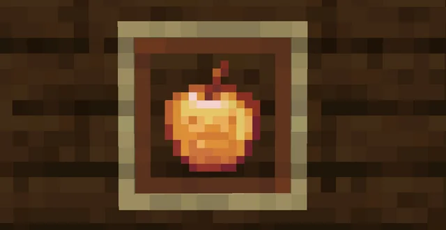

Wiki de Minecraft
Explora información básica sobre ítems del juego
Explora información básica sobre ítems del juego
Los ítems son objetos que puedes usar, equipar o intercambiar. Van desde armas hasta alimentos y herramientas.
Una de las armas más poderosas del juego. Se usa para atacar enemigos con gran daño cuerpo a cuerpo.
Herramienta esencial para minar minerales importantes como oro, hierro o diamante.

Item especial que otorga regeneración y absorción al ser consumido. Muy útil en combate.

Arma de largo alcance que dispara flechas. Es ideal para atacar mobs desde lejos.

Fuente básica de luz. Previene la aparición de mobs hostiles y es útil para explorar cuevas.